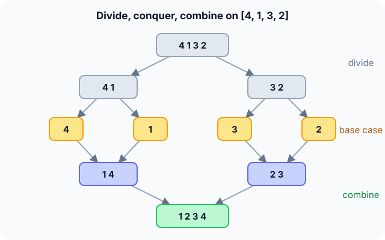

Prerequisites
- Recursion and base cases.
- Merge sort, the textbook example.
- Logarithms: halving $n$ takes $\log_2 n$ steps.
The analogy
Everyday analogy
Imagine counting the votes of a whole country. Nobody counts them all alone: each town counts its own, regions add up their towns, and the capital adds up the regions.
Divide and conquer works the same way. Split the job into smaller jobs of the same kind, solve those (often by splitting again), then combine the answers.
How it works
The three steps: Divide the problem into smaller subproblems of the same type; conquer each one recursively (tiny ones directly); combine their answers.
Start with the split tree by hand
Sort [4, 1, 3, 2] with the three steps. Predict, then open "Check".
Example: predict before you read
Step 1. Divide twice. Predict the pieces at the bottom of the tree.
Check
[4, 1, 3, 2] → [4, 1] and [3, 2] → [4], [1], [3], [2]. Single numbers are the base case: already sorted.
Step 2. Cover the next line and guess: combine the pairs. Predict the two results.
Check
[1, 4] and [2, 3]: each merge compares the two fronts once.
Step 3. Combine the last two pieces. Predict the result and the number of tree levels.
Check
[1, 2, 3, 4]. The tree has 2 levels of splitting, $\log_2 4 = 2$.

Quick recall: Before reading further, cover the text above and say out loud: what are the three steps of divide and conquer?
Check your answer
Divide into smaller subproblems of the same type, conquer them recursively, combine their answers.
Finish the picture: the same idea elsewhere
Try the three steps on two other problems.
- Maximum of
[4, 1, 3, 2]. Predict the answers of the halves and the combine.Check
max([4, 1]) = 4, max([3, 2]) = 3, combine: max(4, 3) = 4. Combining is one comparison.
- Binary search for 3 in
[1, 2, 3, 4]. Predict how many subproblems are solved at each level.Check
Only one: the half that can contain 3. That's why binary search is $O(\log n)$ instead of $O(n)$.
Quick recall: Without scrolling up, say out loud: why is binary search also divide and conquer?
Check your answer
It divides the range in two, conquers just one half (the other is thrown away), and needs no combine step.
The rule in plain words
Write a base case small enough to solve directly. Otherwise divide the input, recurse on the parts, and combine the results.
The cost is set by three things: how many subproblems, how big each is, and how expensive the divide and combine steps are.
Quick recall: Before you read the code, write a divide-and-conquer way to find the maximum of an array, in your own words. Then check below.
Check your answer
If there is one element, it is the maximum. Otherwise split in half, find the maximum of each half, and return the bigger of the two.
The code
Read this code after you have done the split tree by hand. It will make more sense.
int max_dc(int a[], int lo, int hi) { /* maximum of a[lo..hi] */
if (lo == hi) return a[lo]; /* base case: one element */
int mid = lo + (hi - lo) / 2; /* divide */
int l = max_dc(a, lo, mid); /* conquer the left half */
int r = max_dc(a, mid + 1, hi); /* conquer the right half */
return l > r ? l : r; /* combine */
}Definition
What you just did, in one line: divide and conquer solves a problem by splitting it into smaller independent subproblems of the same type, solving them recursively, and combining their solutions.
flowchart TD
A{"is the problem small?"} -->|yes| B["solve it directly (base case)"]
A -->|no| C["divide into subproblems"]
C --> D["solve each subproblem recursively"]
D --> E["combine the answers"]
How fast is it?
Quick recall: Before looking at the formula, predict: how many levels does the merge sort tree have for $n = 1024$?
Check your answer
10, because $2^{10} = 1024$.
Draw the recursion tree. For merge sort there are $\log_2 n$ levels, and the combine steps on each level touch all $n$ elements once:
$$\underbrace{n}_{\text{work per level}} \times \underbrace{\log_2 n}_{\text{levels}} \;=\; O(n \log n)$$For max_dc, each combine is one comparison and there are $n - 1$ of them in total, so it is $O(n)$, no better than a simple loop.
| Algorithm | Subproblems | Combine cost | Total |
|---|---|---|---|
| Binary search | 1 of size $n/2$ | $O(1)$ | $O(\log n)$ |
| Maximum (max_dc) | 2 of size $n/2$ | $O(1)$ | $O(n)$ |
| Merge sort | 2 of size $n/2$ | $O(n)$ | $O(n \log n)$ |
| Quick sort (average) | 2 of size about $n/2$ | $O(n)$ to divide | $O(n \log n)$ |
| Karatsuba multiplication | 3 of size $n/2$ | $O(n)$ | $O(n^{1.585})$ |
Warning
If the subproblems overlap (the same subproblem appears many times, as in naive Fibonacci), plain divide and conquer recomputes them again and again and can become exponential. That's when you need dynamic programming.
Exam tip
For any divide-and-conquer algorithm, be ready to say what the divide, conquer and combine steps are, and to read the cost off the recursion tree: levels × work per level.
Common mistakes
- Forgetting the base case, which recurses forever.
- Splitting into subproblems that are not smaller, e.g.
mid = hi, which also never ends. - Using divide and conquer when subproblems overlap; memoise them instead.
Try it yourself
Exercise 1 (warm-up)
Name the divide, conquer and combine steps of quick sort.
Hint
Where does the real work happen?
Answer
Divide: partition around a pivot (the real work). Conquer: sort both sides recursively. Combine: nothing, since the array is already in place.
Exercise 2 (a bit harder)
Count the inversions (pairs out of order) in [4, 1, 3, 2] with divide and conquer: count inside each half, then the pairs that cross the halves while merging. What do you get? Write your answer down before you open it.
Show answer
Left half [4, 1]: 1 inversion. Right half [3, 2]: 1. Crossing pairs between [1, 4] and [2, 3]: 4 > 2 and 4 > 3, so 2. Total 4. Done during merge sort, this takes $O(n \log n)$ instead of checking all $O(n^2)$ pairs.
Did you know?
Did you know?
In 1960, Kolmogorov conjectured that multiplying two $n$-digit numbers needs about $n^2$ steps. A 23-year-old student, Anatoly Karatsuba, broke it within a week using divide and conquer with 3 half-size products instead of 4.
The fast Fourier transform, which powers audio compression and signal processing, is another divide-and-conquer algorithm: $O(n \log n)$ instead of $O(n^2)$.
Key points to remember
If you remember one thing from each line, remember the because.
- Divide and conquer is recursive because each subproblem is a smaller copy of the original.
- Merge sort is $O(n \log n)$ because it has $\log_2 n$ levels and $O(n)$ combine work per level.
- Binary search is $O(\log n)$ because it solves only one subproblem per level.
- A base case is essential because without it the splitting never stops.
- Overlapping subproblems call for dynamic programming because divide and conquer would recompute them.
Self-check questions
Answer these in order, out loud. They follow the page, so your answers become the script of your video.
- How is divide and conquer like counting a country's votes?
Sample answer
Each town counts its own votes, regions add up their towns, and the capital adds up the regions: split, solve the small parts, combine.
- Walk through divide and conquer on [4, 1, 3, 2] with merge sort.
Sample answer
Split into [4, 1] and [3, 2], then into single numbers; merge into [1, 4] and [2, 3]; merge into [1, 2, 3, 4].
- Why does
max_dcstop whenlo == hi?A good answer names the base case.
Sample answer
A one-element range is the base case: its maximum is that element, so there is nothing left to split.
- So what is divide and conquer, in one sentence?
Sample answer
Solving a problem by splitting it into smaller independent subproblems of the same type, solving them recursively and combining the results.
- Why is merge sort $O(n \log n)$ while
max_dcis only $O(n)$?A good answer compares the combine steps.
Sample answer
Both have $\log_2 n$ levels, but merge sort's combine touches all $n$ elements per level, while max_dc's combine is a single comparison, $n - 1$ comparisons in total.
- What do binary search, merge sort and Karatsuba cost?
Sample answer
$O(\log n)$, $O(n \log n)$ and $O(n^{1.585})$.
- When is divide and conquer the wrong tool?
Sample answer
When subproblems overlap, as in naive Fibonacci; then memoising or dynamic programming avoids recomputation.
- If you had to teach this to a friend in 2 minutes, what would you leave out, and why?
Sample answer
I'd leave out Karatsuba and the inversion count. I'd keep the vote-counting analogy, the [4, 1, 3, 2] split tree, and "divide, conquer, combine; cost = levels × work per level".
External resources
- VisuAlgo: Sorting: watch merge sort and quick sort divide and combine.
- GeeksforGeeks: Divide and conquer: the paradigm with classic examples.
- Wikipedia: Divide-and-conquer algorithm: history and examples.
- MIT OCW 6.006: lectures on recursive algorithms.
Videos
- YouTube search: divide and conquer explained: pick an overview with examples.